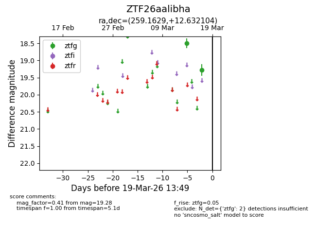
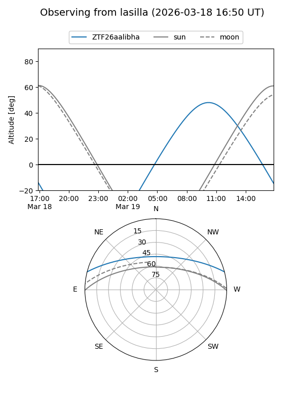
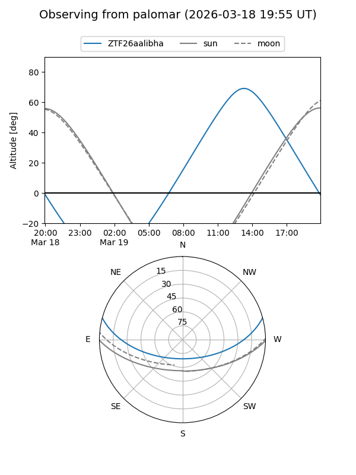

ZTF26aalibha
Target ZTF26aalibha at 2026-03-19 13:51
Aliases and brokers:
FINK: link
Lasair: link
ALeRCE: link
alt names
ZTF26aalibha (ztf,fink_ztf)
Coordinates:
equatorial (ra, dec) = 259.1629,+12.63210
equatorial (HMS+DMS) = 17:16:39.09,+12:37:55.57
galactic (l, b) = (33.9456,+26.66298)
Flags:
Photometry:
last ztfg=19.28
2 ztfg detections
Lightcurve

Visibility


Additional plots